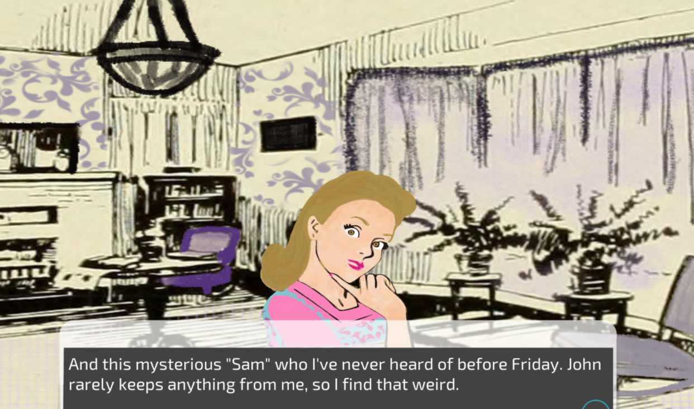

Blog post 9

Final blog 9
This semester was definitely challenging because of the coronavirus and having to adjust to working on assignments at home. Despite having to learn game theory online, I think I did learn a lot. What was most interesting for me was learning the MDA in more detail. Before taking this class, I didn’t think that the development of a game takes a lot of work and preparation. I thought that making a game was much easier. However, it makes perfect sense that a game must undergo many stages- prototype- game testing, etc. I fully saw that with my group game when we worked for each deadline. Also, it was interesting to see other classmates face similar challenges as me and still were able to create awesome games. I had a lot of fun game testing my classmate’s prototypes and final versions. Since I would like to work in the game industry, I think that this class really put me in the right direction because, in this class, we went through a lot of important readings and videos that are extremely helpful in learning how the game industry works. Overall, I really enjoyed taking this class and will continue to work on making my own game and gain better experience in Unity.